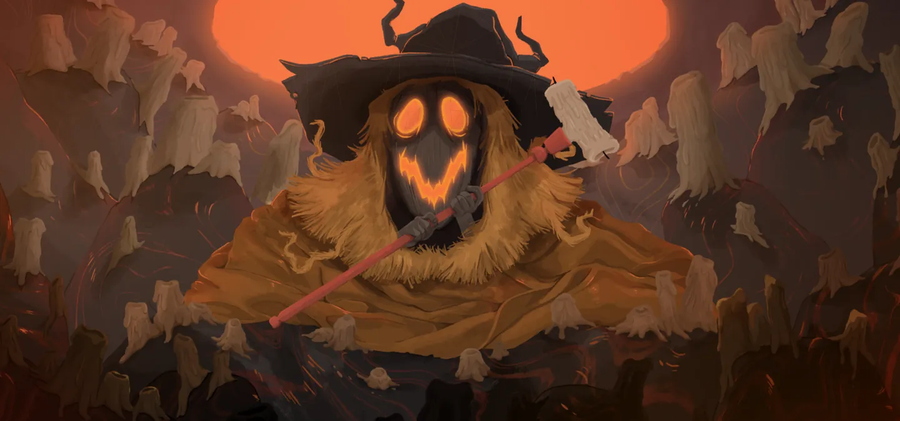
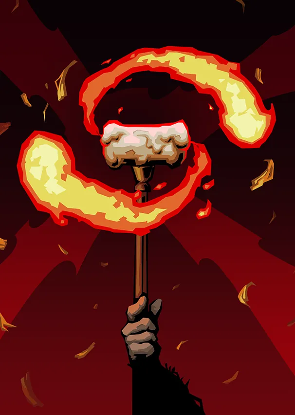
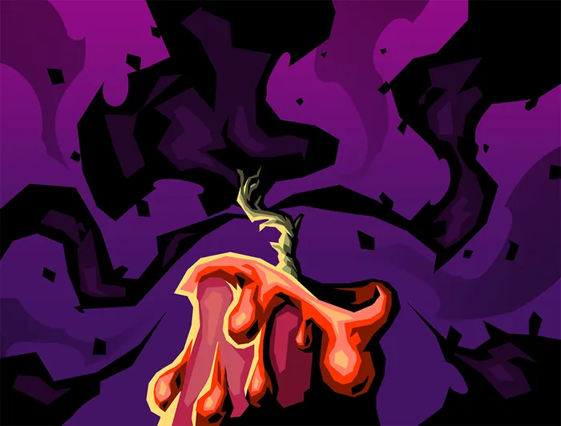

Tezcatara — Nourricière de la Flamme
Patch de Référence :
v0.111.0 Beta(Dernier patch officiel) Acte d'apparition : Acte 2 Déblocage (Epoch) :NoneThème Visuel / Couleur :#33251E
🎨 Portraits & Illustrations
| Icône Ancien | Illustration Principale |
|---|---|
 |
🎮 Intégration Visuelle GBA (Butano)
- Palette suggérée pour la GBA : Teinte dominante
#33251E. À mapper sur une palette 16 couleurs (15 couleurs + transparent) pour le BG de portrait. - Dimensions portrait GBA : 64x64 pixels (mode 4 bpp tilemap) positionné à
(X: 16, Y: 24)sur l'écran 240x160. - Couleur des boutons / encadrements UI :
rgba(20, 10, 0, 0.75)converti en code couleur GBA 15-bit BGR555.
📜 Rôle & Lore dans l'Ascension
🎲 Règles des Slots & Choix
- Nombre total d'options : 10 reliques disponibles.
- Structure des tirages : 3 slot(s).
- Slot #1 : 1 choix parmi 3 reliques présentées.
- Slot #2 : 1 choix parmi 3 reliques présentées.
- Slot #3 : 1 choix parmi 4 reliques présentées.
🏆 Catalogue Complet des Reliques (Classées par Tier)
⭐ Tier S (1 relique)
 Livre d'histoires (
Livre d'histoires (STORYBOOK)
- Tier :
S| Rareté :Ancient - Description : Ajoutez 1 Flamme éclatante à votre Deck.
- Implémentation GBA C++ : Mécanique de Deck : Ajoute
Flamme éclatante(BRIGHTEST_FLAME) au deck du joueur lors de la sélection. Nécessite l'enregistrement de l'ID de carte dansCardPool.
Cartes Dérivées / Associées :

Flamme éclatante (BRIGHTEST_FLAME) — Compétence (Coût :0⚡)- Effet de base : Gagnez ⚡2⚡. Piochez 2 cartes. Perdez 2 PV Max.
- Effet amélioré : Gagnez ⚡3⚡. Piochez 3 cartes. Perdez 2 PV Max.
- Amélioration :
energygain: +1, cards: +1
⭐ Tier A (3 reliques)
 Délicieux biscuit (
Délicieux biscuit (YUMMY_COOKIE)
- Tier :
A| Rareté :Ancient - Description : Améliorez 4 cartes.
- Implémentation GBA C++ : Effet Passif : Hook standard dans
RelicManageravec écouteur d'événement (ON_COMBAT_START,ON_TURN_START, etc.).
 Grooos câlin (
Grooos câlin (BIIIG_HUG)
- Tier :
A| Rareté :Ancient - Description : Retirez 4 cartes de votre Deck. Lorsque vous mélangez votre Pioche, ajoutez une Suie à votre Pioche.
- Implémentation GBA C++ : Mécanique de Deck : Ajoute
Suie(SOOT) au deck du joueur lors de la sélection. Nécessite l'enregistrement de l'ID de carte dansCardPool.
Cartes Dérivées / Associées :

Suie (SOOT) — Statut (Coût :0⚡)- Effet de base : Injouable.
- Effet amélioré : Injouable.
 Boussole dorée (
Boussole dorée (GOLDEN_COMPASS)
- Tier :
A| Rareté :Ancient - Description : Remplacez la carte de l'Acte 2 par un chemin unique.
- Implémentation GBA C++ : Économie Run : Incrémente
RunState::gold. Impact direct sur les boutiques du marchand.
⭐ Tier B (2 reliques)
 Chocolat très chaud (
Chocolat très chaud (VERY_HOT_COCOA)
- Tier :
B| Rareté :Ancient - Description : Démarrez chaque combat avec ⚡4⚡ supplémentaires.
- Implémentation GBA C++ : Effet Passif : Hook standard dans
RelicManageravec écouteur d'événement (ON_COMBAT_START,ON_TURN_START, etc.).
 Soupe nourrissante (
Soupe nourrissante (NUTRITIOUS_SOUP)
- Tier :
B| Rareté :Ancient - Description : Envoûtez toutes les Frappes dans votre Deck avec Braise de Tezcatara.
- Implémentation GBA C++ : Effet de Survie : Modifie
PlayerEntity::heal()ou déclenche un soin passif en début/fin de combat.
⭐ Tier C (2 reliques)
 Lanterne-citrouille (
Lanterne-citrouille (PUMPKIN_CANDLE)
- Tier :
C| Rareté :Ancient - Description : Gagnez ⚡1⚡ au début de chaque tour. S'éteint après 5 combats. Peut être Ravivée aux Sites de repos.
- Implémentation GBA C++ : Effet Passif : Hook standard dans
RelicManageravec écouteur d'événement (ON_COMBAT_START,ON_TURN_START, etc.).
 Sceau doré (
Sceau doré (SEAL_OF_GOLD)
- Tier :
C| Rareté :Ancient - Description : Au début de votre tour, dépensez 3 Pièces d'or pour gagner ⚡1⚡.
- Implémentation GBA C++ : Économie Run : Incrémente
RunState::gold. Impact direct sur les boutiques du marchand.
⭐ Tier D (2 reliques)
 Mitaines réchauffantes (
Mitaines réchauffantes (TOASTY_MITTENS)
- Tier :
D| Rareté :Ancient - Description : Au début de votre tour, Épuisez 1 carte de votre Main et gagnez 1 de Force.
- Implémentation GBA C++ : Effet Passif : Hook standard dans
RelicManageravec écouteur d'événement (ON_COMBAT_START,ON_TURN_START, etc.).
 Caisse à jouets (
Caisse à jouets (TOY_BOX)
- Tier :
D| Rareté :Ancient - Description : Obtenez 5 Reliques de cire. Tous les 3 combats, la Relique de cire le plus à gauche fondra.
- Implémentation GBA C++ : Effet Passif : Hook standard dans
RelicManageravec écouteur d'événement (ON_COMBAT_START,ON_TURN_START, etc.).
💬 Dialogues & Répliques
Les dialogues s'affichent dans la boîte de dialogue inférieure (240x40 px) sur la GBA avec défilement fluide au bouton A :
🗣️ Première Rencontre (Toutes runs confondues)
- 👑 Ancien :
Oh, de la visite ! Entre, ma puce / mon chou, entre !
Qu'est-ce que Tezcatara peut faire pour toi ?
🗣️ Soldat de Fer (Ironclad)
-
👑 Ancien :
Tu flamboies avec tant d'éclat ! Entre, entre !
-
👑 Ancien :
Tu es un si grand garçon ! Viens donc manger quelque chose.
On ne fait pas de massacre le ventre vide ! -
👑 Ancien :
Ohh, l'Architecte est encore en vie ? Tue-le rapidement pour moi.
Je t'attends !
🗣️ La Silencieuse (Silent)
-
👑 Ancien :
Approche donc, timide fillette. Je ne vois pas très bien...
-
👤 SILENT :
...
-
👑 Ancien :
Tu peux me faire confiance.
-
👑 Ancien :
Quelle méchante infection. On va prendre soin de toi.
-
👑 Ancien :
Tu sais, j'ai rencontré tes sœurs. Quelles gentilles fillettes.
-
👤 SILENT :
...
-
👑 Ancien :
Oh... tu as l'air de t'être bagarrée.
🗣️ Le Défectueux (Defect)
-
👤 DEFECT :
-
👑 Ancien :
Tu n'es pas venu pour m'embêter ? Quel drôle de petit automate...
-
👑 Ancien :
Comme ce serait drôle si c'était l'un des siens qui le menait à sa perte !
-
👑 Ancien :
Tu es sûr que tu veux que je te répare ?
-
👤 DEFECT :
-
👑 Ancien :
Eh bien, du moment que tu en es vraiment certain.
🗣️ Le Régent (Regent)
-
👑 Ancien :
Oh, un visiteur si exotique ! Qui es-tu donc, mon chou ?
-
👤 REGENT :
Je ne suis pas un chou ! Parle-moi avec respect, énorme... chose !
-
👑 Ancien :
Mais où sont mes manières ?
Tezcatara ricane avec joie. -
👑 Ancien :
Toi et tes amis êtes déjà de retour ?
Je vous ai préparé quelques gâteries ! -
👑 Ancien :
Contente de te revoir, mon garçon royal ! On dirait que les choses se passent formidablement bien pour toi.
-
👤 REGENT :
Oui bien sûr ! Juste quelques petits contretemps aux niveaux supérieurs... comme par exemple mourir.
-
👑 Ancien :
On apprend tous de nos erreurs.
🗣️ La Nécrolieuse (Necrobinder)
-
👑 Ancien :
Que fait un squelette à l'intérieur de ces murs ?
-
👤 NECROBINDER :
Mon objectif est simple. La vengeance pour ma famille.
J'atteindrai le sommet, et je le ferai payer. -
👑 Ancien :
Merveilleux !
-
👑 Ancien :
Entre, entre ! Faisons flamber tes flammes.
-
👑 Ancien :
Cette flamme autour de toi me fait penser à une chose interdite.
-
👤 NECROBINDER :
Que savez-vous ?
-
👑 Ancien :
Je sais qui a écrit ce tome.
🗣️ Générique (Tout Personnage)
-
👑 Ancien :
De retour, ma petite / mon petit ? Ma flamme te purifiera de tes défauts.
-
👑 Ancien :
Entre donc, ma puce / mon chou. Que peut Tezcatara pour toi aujourd'hui ?
⬅️ Retour au Sommaire de la Bible | ⚙️ Spécifications Techniques GBA